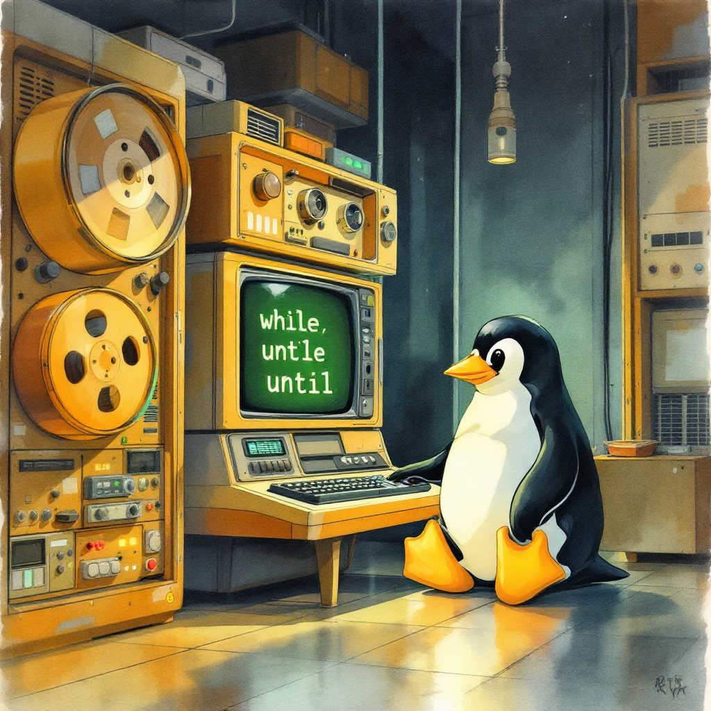

Author’s Note: I’m learning as I write this series on Linux commands and shell scripting. Join me on this journey as we explore these concepts together!
Introduction
Are you tired of repeating the same commands over and over in your Linux terminal? Do you want your scripts to be more powerful and automated? Then it’s time to master Linux loops! In this comprehensive guide, we’ll explore the while and until loops in Linux shell scripting - powerful tools that can save you time and make your scripts more efficient.
What Are Loops in Shell Scripting?
Loops are programming structures that allow you to repeat a set of commands multiple times. Think about everyday activities like slicing a carrot:
- Lift knife
- Advance carrot
- Slice carrot
- If entire carrot sliced, stop. Otherwise, go back to step 1.
This is exactly how loops work in programming! In Linux shell scripting, loops help automate repetitive tasks, process multiple files, or continue operations until certain conditions are met.
The While Loop: Keep Going While Condition is True
The while loop executes a block of code as long as the specified condition evaluates to true (exit status 0 in shell terms).
Basic While Loop Syntax
while [condition]
do
# Commands to execute
doneSimple While Loop Example
Let’s start with a basic example that counts from 1 to 5:
#!/bin/bash
# Simple counter using while loop
count=1
while [ $count -le 5 ]
do
echo "Count: $count"
count=$((count + 1))
done
echo "Loop finished!"When you run this script, it will output:
Count: 1
Count: 2
Count: 3
Count: 4
Count: 5
Loop finished!The loop continues as long as the value of count is less than or equal to 5. Once count becomes 6, the condition evaluates to false, and the loop terminates.
Your Turn!
Try modifying the above script to count from 10 down to 1, and then print “Blast off!” at the end.
See Solution
#!/bin/bash
# Countdown using while loop
count=10
while [ $count -ge 1 ]
do
echo "Count: $count"
count=$((count - 1))
done
echo "Blast off!"The Until Loop: Keep Going Until Condition is True
The until loop is the opposite of the while loop. It continues executing until the condition becomes true (exit status 0).
Basic Until Loop Syntax
until [condition]
do
# Commands to execute
doneSimple Until Loop Example
Let’s rewrite our counter using an until loop:
#!/bin/bash
# Simple counter using until loop
count=1
until [ $count -gt 5 ]
do
echo "Count: $count"
count=$((count + 1))
done
echo "Loop finished!"This produces the same output as our while loop example. The key difference is in the condition logic - the loop continues until count is greater than 5.
When to Use While vs Until
The choice between while and until usually comes down to which one allows you to write the clearest condition:
- Use
whilewhen it’s natural to express “keep going while something is true” - Use
untilwhen it’s clearer to say “keep going until something becomes true”
Both loops can accomplish the same tasks, so choose the one that makes your code more readable and intuitive.
Breaking Out of Loops
Sometimes you need to exit a loop before its condition naturally becomes false/true. For this, bash provides two important commands:
The break Command
The break command immediately terminates the loop and continues execution with the statement following the loop.
#!/bin/bash
# Demonstrating break command
count=1
while [ $count -le 10 ]
do
echo "Count: $count"
if [ $count -eq 5 ]
then
echo "Breaking out of the loop!"
break
fi
count=$((count + 1))
done
echo "Loop finished!"Output:
Count: 1
Count: 2
Count: 3
Count: 4
Count: 5
Breaking out of the loop!
Loop finished!The continue Command
The continue command skips the remaining commands in the current loop iteration and jumps to the next iteration.
#!/bin/bash
# Demonstrating continue command
count=0
while [ $count -lt 10 ]
do
count=$((count + 1))
# Skip printing even numbers
if [ $((count % 2)) -eq 0 ]
then
continue
fi
echo "Count: $count"
done
echo "Loop finished!"Output:
Count: 1
Count: 3
Count: 5
Count: 7
Count: 9
Loop finished!Creating an Infinite Loop
Sometimes you want a loop to run indefinitely until explicitly told to stop. This is called an infinite loop:
#!/bin/bash
# Infinite loop example
while true
do
echo "Press Ctrl+C to stop this infinite loop"
sleep 1
doneThis loop will continue forever until you press Ctrl+C to terminate it. Infinite loops are commonly used in menu-driven programs or daemons that need to run continuously.
Reading Files Line by Line with Loops
A common use of loops is to process files line by line. Here’s how you can do this:
#!/bin/bash
# Reading a file line by line
while read line
do
echo "Line: $line"
done < /etc/passwdThis reads each line from the /etc/passwd file and displays it with “Line:” prepended.
Reading Fields from a File
We can also parse fields from each line using the read command:
#!/bin/bash
# Reading and parsing fields from a file
# Create a sample file
cat > users.txt << EOF
john 25 engineer
mary 32 doctor
steve 41 teacher
EOF
# Read and process the file
while read username age profession
do
echo "Username: $username, Age: $age, Profession: $profession"
done < users.txtOutput:
Username: john, Age: 25, Profession: engineer
Username: mary, Age: 32, Profession: doctor
Username: steve, Age: 41, Profession: teacherYour Turn!
Create a script that reads the /etc/passwd file and displays only the username (first field) and shell (last field) for each user. The fields in /etc/passwd are separated by colons (:).
See Solution
#!/bin/bash
# Display username and shell from /etc/passwd
while IFS=: read username password uid gid info home shell
do
echo "Username: $username, Shell: $shell"
done < /etc/passwdIFS=: sets the field separator to a colon for the read command.
Processing Command Output with Loops
You can also pipe command output into a loop:
#!/bin/bash
# Process the output of a command using a loop
ls -l | while read permissions links owner group size month day time filename
do
echo "File: $filename, Size: $size bytes, Owner: $owner"
doneThis script takes the output of ls -l (which lists files in long format) and extracts specific information from each line.
Note: When using pipes with loops, the loop runs in a subshell. Any variables created or modified inside the loop will not retain their values outside the loop.
Advanced Example: Monitoring System Resources
Let’s create a script that monitors system CPU usage at regular intervals:
#!/bin/bash
# Monitor CPU usage at regular intervals
echo "CPU Usage Monitor (Press Ctrl+C to stop)"
echo "Time CPU Usage"
echo "-----------------"
while true
do
# Get current time and CPU idle percentage
current_time=$(date +%H:%M:%S)
cpu_idle=$(top -bn1 | grep "Cpu(s)" | awk '{print $8}' | cut -d. -f1)
cpu_usage=$((100 - cpu_idle))
# Display the information
printf "%s %3d%%\n" "$current_time" "$cpu_usage"
# Wait 5 seconds before next check
sleep 5
doneThis script: 1. Runs in an infinite loop 2. Gets the current time 3. Gets the current CPU usage from the top command 4. Displays the information in a nice format 5. Waits 5 seconds before repeating
Nested Loops: Loops Within Loops
You can put one loop inside another to handle more complex scenarios:
#!/bin/bash
# Nested loops example: multiplication table
for i in {1..5}
do
for j in {1..5}
do
result=$((i * j))
printf "%3d " $result
done
echo # Print a newline after each row
doneOutput:
1 2 3 4 5
2 4 6 8 10
3 6 9 12 15
4 8 12 16 20
5 10 15 20 25 Common Pitfalls and Best Practices
1. Infinite Loop Protection
Always ensure your loops have a valid exit condition or a break statement. If you’re using an infinite loop with while true, make sure there’s a clear way to exit.
2. Variable Scope in Piped Loops
Remember that loops in a pipeline run in a subshell:
# This won't work as expected
echo "test" | while read line
do
count=10
done
echo $count # Will be empty, not 10To fix this, you can use process substitution:
while read line
do
count=10
done < <(echo "test")
echo $count # Will be 103. Proper Exit Conditions
Ensure your loops have proper exit conditions to prevent unexpected behavior:
#!/bin/bash
# Bad example
i=1
while [ $i -lt 10 ]
do
echo $i
# Forgot to increment i, creating an infinite loop
doneCorrect version:
#!/bin/bash
# Good example
i=1
while [ $i -lt 10 ]
do
echo $i
i=$((i + 1))
done4. Handling Empty Files
When reading files, handle the case where the file might be empty:
#!/bin/bash
if [ -s "$filename" ] # Check if file exists and is not empty
then
while read line
do
echo "Line: $line"
done < "$filename"
else
echo "File is empty or does not exist!"
fiKey Takeaways
- While loops continue as long as the condition is true (returns exit status 0)
- Until loops continue until the condition becomes true
- Use break to exit a loop early
- Use continue to skip to the next iteration
- Loops can read from files using redirection or from command output using pipes
- When using pipes with loops, remember that the loop runs in a subshell
- Always ensure your loops have proper exit conditions
- Choose between
whileanduntilbased on which makes your code clearer
FAQs
Q: What’s the difference between while and until loops?
A: while loops continue as long as the condition is true, whereas until loops continue until the condition becomes true. They’re essentially opposites of each other.
Q: Can I nest while and until loops?
A: Yes, you can nest any combination of loops within each other. This allows for complex iterations and data processing.
Q: How do I read a file line by line in a shell script?
A: Use while read line; do ...; done < filename to read a file line by line.
Q: What happens if I forget to increment my counter in a while loop?
A: You’ll create an infinite loop that will run forever unless you manually terminate it with Ctrl+C or until the system kills it.
Q: How can I break out of nested loops?
A: The break command only breaks out of the innermost loop. To break out of multiple nested loops, you can use a flag variable or restructure your code.
I’ll add the References section with clickable URLs as requested:
References
- Linux for Bioinformatics: While Loop and Until Loop
- Bash Scripting: Until Loop - GeeksforGeeks
- Bash For Loop - CyberCiti
- University of Warwick: Shell Programming - Loops
I hope you’ve found this guide to while and until loops in Linux helpful! These powerful tools can make your scripts more efficient and help automate repetitive tasks. As you practice using loops, you’ll discover even more ways to leverage them in your Linux journey.
Did you find this tutorial helpful? What other Linux topics would you like to learn about next? Feel free to share your thoughts and questions!
Happy Coding! 🚀

You can connect with me at any one of the below:
Telegram Channel here: https://t.me/steveondata
LinkedIn Network here: https://www.linkedin.com/in/spsanderson/
Mastadon Social here: https://mstdn.social/@stevensanderson
RStats Network here: https://rstats.me/@spsanderson
GitHub Network here: https://github.com/spsanderson
Bluesky Network here: https://bsky.app/profile/spsanderson.com
My Book: Extending Excel with Python and R here: https://packt.link/oTyZJ
You.com Referral Link: https://you.com/join/EHSLDTL6